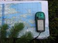
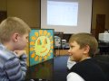

{kind=link}
ВНИМАНИЕ!
Оперативная информация по этому адресу больше не поддерживается, по данной ссылке адрес нашего нового сайта. 2012-09-01, Москва >>
Также наш кружок есть в "ВКонтакте"
Приглашаем детей на занятия в кружки!
 Добро пожаловать к нам в радиокружок, у нас круглогодичный прием в секции: "Основы радиотехники","Основы любительской радиосвязи", "Основы робототехники", "Устройство бытовой радиоаппаратуры и радиоуправляемых игрушек", "Лаборатория звука", "Техническое моделирование. Идёт запись на 2012-2013 год. Свежая информация есть всегда в "ВКонтакте"
Добро пожаловать к нам в радиокружок, у нас круглогодичный прием в секции: "Основы радиотехники","Основы любительской радиосвязи", "Основы робототехники", "Устройство бытовой радиоаппаратуры и радиоуправляемых игрушек", "Лаборатория звука", "Техническое моделирование. Идёт запись на 2012-2013 год. Свежая информация есть всегда в "ВКонтакте"
Поздравляем всех с "Днём Знаний" и началом нового 2013 учебного года!
Всех "соучастников" поздравляем с Днём Знаний! Ура!!! Сегодня по традиции день открытых дверей, а дальше занятия как обычно. Впрочем желающим поближе познакомиться с кружком и записаться можно и в другие дни, а предварительно можно и виртуально, просто напишите нам.
{kind=link}
2013-09-01, РФ ("День Знаний" на ru.wikipedia.org) >>
Прошёл традиционный радиолюбительский слёта "Пирогово - 2012"
Дождя не было!
В первый день ребята участвовали в многоборье: гонки на байдарках, охота на лис, поиск клада с металлоискателем, ориентирование по GPS, стрельба из лука. На второй день проходила традиционная радиоэстафета (поиск тайников с кодовыми номерами и передача информации с помощью портативных радиостанций в лагерь).
2012.05.26-27, Пироговское водохранилище.
Подробности в ВКонтакте.>>
Состоялась 21-я научно-практическая конференция "Радиопоиск-2012"
В проходившей 3-5 апреля городской конференции "Радиопоиск-2012" от радиолюбительской студии «Рател» принимали участие больше 10 человек, и снова успешно: кто-то стал лауреатом, а кто-то дипломантом. Грустное, в этом году потерян ещё один кружок - умер бессменный руководитель, а замены не нашлось. :( Полный отчёт о конференции будет позже.
2012-04-07, Москва - Шаболовка.
Подробности.>>
Все на Родительское собрание!
Внимание родителей! 5 сентября в 19-00 состоится собрание, где будут представлены планы занятий, уточнёны списки групп по секциям и рассмотрены другие организационные моменты, преподаватели ответят на Ваши вопросы.
2011-09-05, Москва, Хитровский пер. д3/1/строение-1.
Поздравляем всех с "Днём Знаний" и началом нового учебного года!
Всех "соучастников" поздравляем с Днём Знаний! Ура!!! Сегодня по традиции день открытых дверей, а дальше занятия как обычно. Впрочем желающим поближе познакомиться с кружком и записаться можно и в другие дни, а предварительно можно и виртуально, просто напишите нам.
2011-09-01, РФ ("День Знаний" на ru.wikipedia.org) >>
1-й отчёт с традиционного слёта "Пироговские Игры - 2011"
На 21 мая официально был назначен конец света. Мы успели поставить палатки, нарубить дров и разжечь костер. И тут вокруг все загрохотало, засверкали молнии и начался дождь. Но мы мирно жуя бутерброды пережидали начало конца под тентом. Настроение было боевое и в меру ироничное. Вобщем концом света нас не напугать!
И позже выглянуло солнышко, и слет начался согласно намеченной программе. В первый день ребята участвовали в многоборье: гонки на байдарках, охота на лис, поиск клада с металлоискателем, ориентирование по GPS, стрельба из лука. В конце дня играли в футбол 4 часа подряд до темноты. Победила дружба и усталось. На второй день проходила традиционная радиоэстафета (поиск тайников с кодовыми номерами и передача информации с помощью портативных радиостанций в лагерь).
2011.05.21-22, Пироговское водохранилище.
Подробности.>>
Состоялась 20-я научно-практическая конференция "Радиопоиск-2011"
В проходившей 6-7 апреля городской конференции "Радиопоиск-2011" от радиолюбительской студии «Рател» принимали участие больше 10 человек, многие из них стали лауреатами и дипломантами. Грустное, в этом году количество кружков-участников в главной кружковской конференции уменьшилось, Москва потеряла 2 кружка. :( Полный отчёт о конференции будет позже.
2011-04-07, Москва - Шаболовка.
Подробности.>>
"Военный радист-2011 (весна)"
 30 апреля в г. Подольске проходила игра "Военный радист" . В данном мероприятии принимала участие команда Радиолюбительской студии "Рател" Дворца "НаПолянке" с составе Марченко Кирилла, Харьковского Димы и Дубровского Бори. Мы заняли первое место среди взрослых команд. Мы уже трижды чемпионы данного мероприятия.
30 апреля в г. Подольске проходила игра "Военный радист" . В данном мероприятии принимала участие команда Радиолюбительской студии "Рател" Дворца "НаПолянке" с составе Марченко Кирилла, Харьковского Димы и Дубровского Бори. Мы заняли первое место среди взрослых команд. Мы уже трижды чемпионы данного мероприятия.
В программу игры входили дисциплины радио-многоборья : стрельба из винтовки, арбалета, прохождение полосы препятствий, "Охота на лис", скоростная сборка электронной схемы, расшифровка радиограммы на азбуке Морзе. Благодаря разносторонней подготовке участников команды ( Боря был первый в сборке электронной схемы и расшифровке радиограммы; Дима отличился на этапе стрельбы и "Охоте на лис"; Максим прекрасно стрелял из винтовки- без единого промаха) наша команда заняла первое место.
Поздравляем нашу команду и всех участников!
2011-04-30 г.Подольск.
Подробности.>>
Состоялась 20-я научно-практическая конференция "Радиопоиск-2011"
В проходившей 6-7 апреля городской конференции "Радиопоиск-2011" от радиолюбительской студии «Рател» принимали участие больше 10 человек, многие из них стали лауреатами и дипломантами. Грустное, в этом году количество кружков-участников в главной кружковской конференции уменьшилось, Москва потеряла 2 кружка. :( Полный отчёт о конференции будет позже.
2011-04-07, Москва - Шаболовка.
Подробности.>>
"Военный радист-2010"
 В славном городе Подольске, состоялась военно-патриотическая игра "Военный радист". Игра посвящалась 65-летней годовщине Победе в Великой Отечественной Войне.
В славном городе Подольске, состоялась военно-патриотическая игра "Военный радист". Игра посвящалась 65-летней годовщине Победе в Великой Отечественной Войне.
Участвовали команды 2-х возрастных групп 10-14 и 15-18 лет (3 спортсмена + тренер), каждая проходила 6-ть этапов: стрельба из пистолета и винтовки (на точность), сборка радиосхемы на время (конструктор "Знаток), сборка приёмника СРП и поиск лисы (на время), расшифровка фразы из азбуки Морзе на человеческий (на время) и стрельба из арбалета (на точность).
Отважно сражались с соперниками наши команды, в итоге заслуженная победа (1-место) была добыта командой старшей возрастной группы. Поздравляем её и остальных участников!
2010-10-16, г.Подольск
Подробности.>>
Все на Родительское собрание!
Внимание родителей! 27 сентября в 18-00 состоится собрание, где будут представлены планы занятий, уточнёны составы групп по секциям и рассмотрены другие организационные моменты, преподаватели ответят на Ваши вопросы.
2010-09-27, Москва, Хитровский пер. д3/1/строение-1.
Поздравляем всех с праздником "1 сентября" и началом нового учебного года!
Расписание занятий с детьми с 1 Октября и до конца 2010 года будет уточнено по итогам родительского собрания и записи новых детей в кружок, серьёзных изменений не ожидается.
2010-09-01, РФ ("День Знаний" на ru.wikipedia.org) >>
Радиоэкспедиция БАЛТИКА-2010
Состоялась радиоэкспедиция на Балтику с 19 по 30 июля 2010 года. Главная база находилась на острове. Позывной на время экспедиции - RK3AZY/1. Море, солнце и хорошая связь наблюдались в течении всего выезда. Все вернулись здоровыми и отдохнувшими
2010-07-30, Полный отчет временно задерживается из-за жары и технических причин. >>
Первые итоги НТТМ-2010!
C 29 июня - 2 июля 2010 г. на ВВЦ проходила X-я Всероссийская выставка Научно технического творчества молодежи и VIII Европейская выставка и Экспо-Наука-2010 ESE 2010. Радиолюбительская студия "Рател" при ГОУ МГДТДМ “На Полянке» была представлена двумя проектами - "Учебно-спортивным роботом ДН-1" и "Говорящей урной" на площадке, несмотря на жару, была немало посетителей, обе разработки вызвали немалый интерес детей и их родителей, соседей, наших друзей по выставке, средств массовой информации, работы кружковцев были отмечены дипломами участников. Всем и особенно организаторам спасибо, удачи, до новых встреч!
2010-07-02, Москва, ВВЦ(ВДНХ)
Подробности.>>
Все на НТТМ-2010!
C 29 июня - 2 июля 2010 г. на ВВЦ пройдет X-я Всеросийская выставка Научно технического творчества молодежи и VIII Европейская выставка и Экспо-Наука-2010 ESE 2010. Радиолюбительская студия "Рател" при ГОУ МГДТДМ “На Полянке» будет представлена на F1-68, нашим "Учебно-спортивным роботом ДН-1" и "Говорящей урной" на площадке F1-80
Приглашаем всех кружковцев и их родителей, друзей и желающих присоединиться к нам в новом учебном цикле. Во время выставки будет идти запись в кружок на 2009-2010 год.
2010-06-27, Москва, ВВЦ(ВДНХ).
дополнительная информация от организаторов выставки для посетителей. >>
"Армейский радист"
 23 апреля состоялась радиоигра "Армейский радист". Игра проходила в г. Подольске и состояла из этапов: стрельба из винтовки, метание гранаты, сборка конструктора "Знаток", "охота на лис", стрельба их пистолета. Игра посвящалась 65-летию Победы в Великой Отечественной Войне.
Мы заняли 1 место.
23 апреля состоялась радиоигра "Армейский радист". Игра проходила в г. Подольске и состояла из этапов: стрельба из винтовки, метание гранаты, сборка конструктора "Знаток", "охота на лис", стрельба их пистолета. Игра посвящалась 65-летию Победы в Великой Отечественной Войне.
Мы заняли 1 место.
Состоялась научно-практическая конференция "РАДИО-ПОИСК 2010"
В проходившей 8 апреля городской конференции "Радиопоиск-2010" от РЦТД «Рател» принимали участие больше 10 человек, некоторые из них стали лауреатами. В этом году количество участников в главной кружковской конференции в Мосве увеличилось, соревноваться стало интереснее и сложнее.
2010-04-08
Москва - Шаболовка.
Подробности.>>